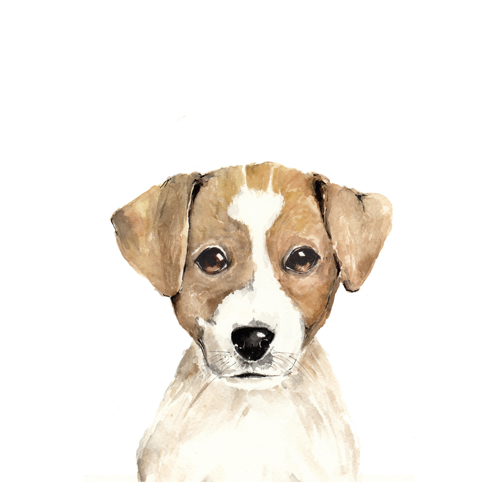

Bartosz Goc - Strona domowa - Hello git
Kim jestem?

Nazywam się Bartek, aktualnie jestem tester autoamtycznym, jednakże chciałbym przejść na developerską stronę mocy. Scieżka rozwoju jaką obrałem to full stack developer. Preferuję platformę .NET aniżeli wszystko co związane z Java, dlatego też w ramach hobby dokształcam się z .NET MVC. Mam nadzieję, że umiejetności zdobyte na tym kursie pomogą mi w podjęciu pracy na stanowisku developerskim. Dodatkowo interesuje się szeroko pojmowanym sportem oraz zdrowym trybem życia, jestem również certyfikowanym instruktorem snowboardu.
Przejdz do pamiętnika
Pamiętnik
Czy praca testera automatycznego jest ciekawa?
Praca tester automatycznego jest w mojej opinii idealnym sposobem na rozpoczęcie swojej kariery w IT, próg wejścia jest stosunkowo niski, o wiele łatwiej znaleźć taka pracę, nie mając doświadczenia, aniżeli stanowisko junior developera. Muszę zaznaczyć, że zaczynając pracę nie byłem kompletnie zielony jeśli chodzi o programowanie, ponieważ dość dużo wyniosłem ze studiów, a kończyłem Automatykę i Robotykę na Politechnice Gdańskiej.
Czy jazda na snowboardzie jest niebezpieczna?
Genezą tego mitu są prawdopodobnie statystyki, z których wynika, że snowboardziści częściej ulegają kontuzjom niż narciarze. Jednak snowboard jest młodszą dyscypliną. Pojawił się znacznie później niż narty, stąd między innymi istotny odsetek wśród deskarzy stanowią ludzie młodzi. Wystarczy spojrzeć na pierwszą z brzegu górkę – narciarz w wieku emerytalnym to nie żaden wyjątkowy obrazek, ze świecą natomiast szukać emerytowanego snowboardera. Jak się to ma do wypadkowości? Otóż nikt chyba nie zaprzeczy, że young power = mniejsza wyobraźnia, większa odwaga, szybsza jazda i zwiększone zużycie gipsu.
Snowboard jest trudny?
Jeżeli nauka jazdy na dwóch deskach zajmuje sezon lub dwa, to ile trzeba się uczyć, żeby przyzwoicie zjeżdżać na jednej desce? Odpowiedź jest prosta: dwa razy krócej. Ucząc się podstaw narciarstwa trzeba skupić uwagę na dwóch deskach, dwóch nogach, które czasami nie chcą ze sobą współpracować oraz dwóch wiecznie plączących się kijków. W snowboardzie nogi są unieruchomione i tworzą jedną całość więc nie ma powodu, żeby nie chciały ze sobą współpracować. Kijki zbytnio nie przydają się więc nie ma co się plątać między nogami. Dwa razy mniej sprzętu oznacza dwa razy mniej kłopotów i dwa razy krótszy czas na naukę! Na nartach zjeżdża się już praktycznie w pierwszym dniu jednak osiągnięcie zadawalających rezultatów trwa czasami długie lata. Pierwsze dni na snowboardzie zazwyczaj spędza się na tej części ciała, która znajduje się poniżej pleców, ale z kolei do zadawalających rezultatów dochodzi się zaskakująco szybko.
Snowboard jest dla młodych, ja jestem już za stary - mit?
Rzeczywiście w snowboardingu dominuje młodzież. Jednak nie wynika to z tego, że jedna deska jest bardziej wymagająca fizycznie niż narty, lecz z faktu że jest dyscypliną znacznie młodszą. Nic więc nie stoi na przeszkodzie, żeby rozpocząć naukę w wieku emerytalnym, zwłaszcza w kontekście obalonego mitu #2. W porównaniu do nart, snowboard jest nawet bardziej dla „starych” niż „młodych” – na nartach można zacząć jeździć już w wieku 3 lat, podczas gdy na snowboardzie niestety nie – dla takich maluchów nawet nie ma desek.
Snowboard jest upierdliwy?
Do snowboardu najczęściej zraża konieczność siadania na śniegu, problemy w kolejce do wyciągu, walka na na orczyku, zejście z kanapy i inne podobne kłopoty logistyczne. O ile sama nauka jeżdżenia jest banalna, to dla wielu podejście do wyciągu i wjechanie orczykiem na górę stanowi nie lada problem. Wypinając jedną nogę snowboarder traci połowę kontroli nad deską, co na początku sprawiać może kłopoty. Wszystko jednak jest kwestią treningu. Doświadczony snowboarder w niczym nie ustępuje narciarzowi pomimo tego, że nie może się podeprzeć kijkami. Jeżeli ktoś przewraca się w kolejce albo wjeżdżając na orczyku to pewnie jeszcze nie zdążył się nauczyć. Jest też i rada na mokre 4 litery. Spodnie snowboardowe tym różnią się od narciarskich, że są uszyte z odpowiedniego materiału, tak aby nie trzeba było używać pumpersa. Dla tych, którym szczególnie przeszkadza siadanie na śniegu wymyślono systemy zapinania nie wymagające bezpośredniego kontaktu ze śniegiem. Zapięcie takich wiązań trwa niewiele dłużej niż w nartach.
Narty są lepsze od snowboardu mit?
Narciarstwo wcale nie jest lepsze od snowboardingu i na odwrót. Obydwie dyscypliny są zupełnie różne, a jedynym wspólnym elementem są śnieg i góry, po których się jeździ. Każdy w jednej i drugiej dyscyplinie znajduje zarówno pozytywne jak i negatywne strony. Jedni rzucają narty dla snowboardu i już nigdy nie wracają do dwóch desek, inni po latach na snowboardzie zdradzają go dla nart, a jeszcze inni od początku do końca są wierni jednej i tej samej dyscyplinie albo też miotają się niezdecydowani między nartami i deską.